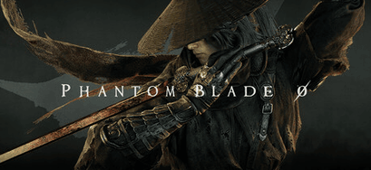
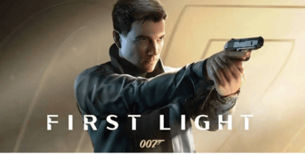
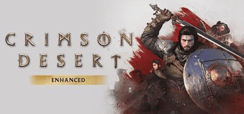
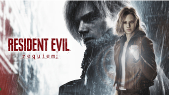

🎮 My Top 5 Games of 2026 — GOTY Contenders
A simple website/repository project covering my personal Top 5 Game of the Year contenders for 2026 with what I think the user and critic scores would be.
1. Project Overview
This repository contains a list of my Top 5 Games of 2026 watchlist. The site highlights five major releases, personal ratings, critic/user scores, release details, and my GOTY prediction.
| Item |
Details |
| Project Name |
GOTY 2026 Contenders |
| Topic |
Top 5 games of 2026 |
| Sections |
5 |
| Includes |
Images, tables, ratings, predictions |
2. The Top 5 Contenders
| # |
Game |
Genre |
Release Window |
Status |
| 1 |
Grand Theft Auto VI |
Open-World Action |
Nov 19, 2026 |
Upcoming |
| 2 |
Phantom Blade Zero |
Action RPG (Wuxia) |
Oct 29, 2026 |
Upcoming |
| 3 |
007 First Light |
Action-Adventure / Stealth |
May 27, 2026 |
Upcoming |
| 4 |
Crimson Desert |
Open-World Action RPG |
Mar 19, 2026 |
Upcoming |
| 5 |
Resident Evil Requiem |
Survival Horror |
Feb 27, 2026 |
Upcoming |
3. Ratings Table (Fictional Scores)
| Game |
Critic Score |
User Score |
My Rating (out of 10) |
| Grand Theft Auto VI |
96 |
9.3 |
10.0 |
| Phantom Blade Zero |
87 |
8.8 |
9.0 |
| 007 First Light |
83 |
8.2 |
8.5 |
| Crimson Desert |
81 |
8.0 |
8.5 |
| Resident Evil Requiem |
91 |
9.0 |
9.5 |
4. Game Highlights & Images
Grand Theft Auto VI — 10/10

The biggest entertainment launch of the decade. Rockstar's return to Leonida could redefine open-world gaming entirely.
✅ The Good
- Vice City and the wider state of Leonida as a huge, modern open-world setting
- Dual protagonists, Jason and Lucia, promise a story built around a duo
- Rockstar's track record for world detail, writing, and polish
- Visuals that look like a true next-gen showcase
❌ The Bad
- Delayed twice already, which adds a lot of pressure to deliver
- Console-only at launch (PS5 and Xbox Series X|S), with PC likely a year or more away
- Price is 100 dollars a lot people do not want to spend 100 dollars
- Hype is so high that almost anything short of perfect could feel like a letdown
Phantom Blade Zero — 9/10

A stylish wuxia action RPG with fluid, Sekiro-esque combat. A serious dark-horse GOTY pick.
✅ The Good
- Fast, fluid kung-fu combat built on parries, dodges, and chained strikes
- Memorable, challenging boss fights
- A huge variety of weapons to experiment with
- Gorgeous locations and strong art direction
❌ The Bad
- Confusing, hard-to-follow storytelling
- Frame rate drops during some boss fights and in certain areas
- Difficulty balance feels uneven across modes
- Fairly linear level design
007 First Light — ⭐ 8.5/10

IO Interactive's Bond origin story. Stealth sandboxes plus the James Bond fantasy equals serious potential.
✅ The Good
- Captures the James Bond tone and spy-movie spectacle
- Blends Hitman-style stealth sandboxes with Uncharted-style blockbuster action
- Strong story, memorable characters, and a well-received new 007
- Open levels with freedom in how you tackle objectives
❌ The Bad
- Pacing issues in some stretches
- Less replayable and less deep than the Hitman games
- Some awkward cutscene transitions
- Performance problems in quality mode on some platforms
Crimson Desert — 8.5/10

Pearl Abyss's sprawling open-world epic. Massive scale and gorgeous visuals.
✅ The Good
- Enormous open world packed with activities, quests, and secrets
- Stunning visuals and excellent audio
- Deep, satisfying combat with lots of weapon and gear options
- Hundreds of hours of content and player freedom
❌ The Bad
- Steep learning curve and a control scheme that can feel overwhelming
- Weak, disjointed story and narrative
- Bugs and rough edges, with quality-of-life problems at launch
- Very divisive reviews, with scores ranging from poor to near-perfect
Resident Evil Requiem — 9.5/10

Horror royalty returns. Grace Ashcroft's story could be the franchise's most ambitious entry yet.
✅ The Good
- Switching between Grace (tense survival horror) and Leon (action) keeps things fresh
- Excellent gunplay, with strong puzzles and exploration
- Top-tier audio, visuals, and voice acting
- Plenty of nostalgic callbacks for longtime fans
❌ The Bad
- The story is uneven and can swing from engaging to goofy
- The action-heavy second half is less compelling than the horror
- Grace gets little character development
- Heavy on fan service, which may overwhelm newcomers
5. GOTY Prediction & Summary
| Ranking |
Game |
Critic Score |
User Score |
My Rating |
| 🥇 |
Grand Theft Auto VI |
96 |
9.3 |
10/10 |
| 🥈 |
Resident Evil Requiem |
91 |
9.0 |
9.5/10 |
| 🥉 |
Phantom Blade Zero |
87 |
8.8 |
9/10 |
| 4 |
007 First Light |
83 |
8.2 |
8.5/10 |
| 5 |
Crimson Desert |
81 |
8.0 |
8.5/10 |
| Summary Category |
Details |
| Total Games |
5 |
| Highest Critic Score |
Grand Theft Auto VI (96) |
| Highest User Score |
Grand Theft Auto VI (9.3) |
| Highest My Rating |
Grand Theft Auto VI (10/10) |
| Lowest Rated |
Crimson Desert (81 critic / 8.0 user) |
| Most Anticipated |
Grand Theft Auto VI |
| Dark Horse Pick |
Phantom Blade Zero |